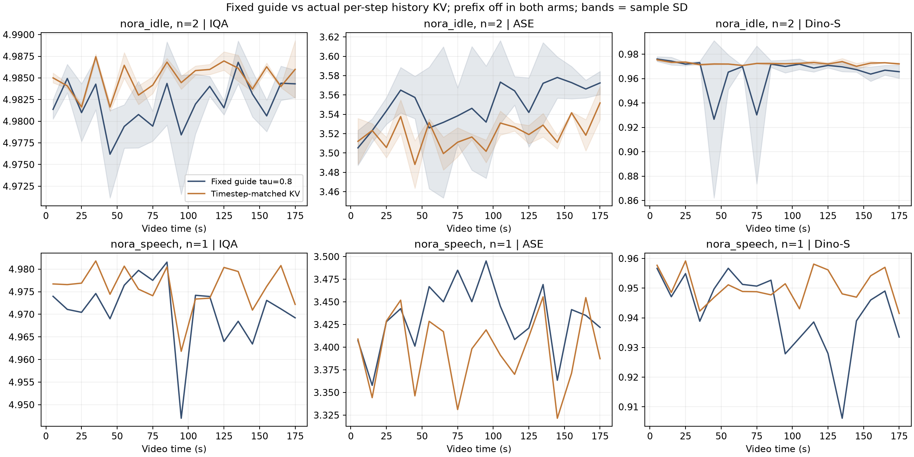
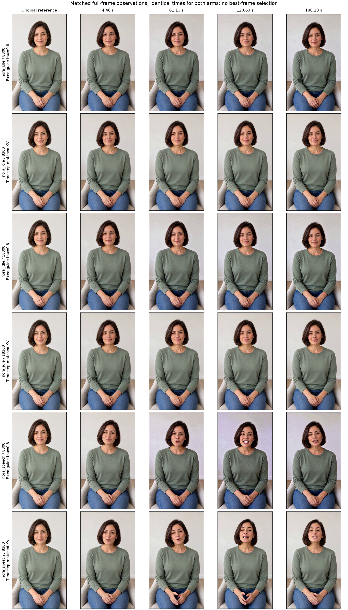

Archived original experiment · 14–15 October 2026. Restored 28 October from retained files; no new model run. Original report language and numerical results preserved. Videos are unchanged. This archive includes the 25 eligible complete screening trajectories and 6 timestep-KV comparison videos; per-segment controls are omitted.
Archive manifest.
固定历史噪声 vs 真实逐步历史 KV
新生成的 3 组配对、6 条约三分钟视频：静坐两个种子、说话一个种子。每组共用开场、逐段提示词和随机种子。
两路均启用 prefix off，使用原始参考图和 window RoPE。左侧使用固定 τ=0.8 的历史条件；右侧复用前一段相同去噪步骤的真实历史音视频 K/V。
补充：段间连续性
根据观看反馈补做的事后诊断：说话组逐步 KV 的换段跳变增加 75.7%，段内相邻帧变化增加 1.8%。外观一致性提高，同时段间连续性变差。
每条视频统计全部 63 个接缝。数值为相邻帧 RGB 平均绝对差，像素范围 0–255；包含姿态、纹理及亮度变化。段内变化小也可能意味着动作少，因此段内 MAE 不单独作为质量分数。63 个接缝不是 63 个独立样本；说话仍只有一个种子。
选择上方场景后，可从预定接缝前一秒开始对照：
接缝位于 3.042 秒起、每隔约 2.833 秒。该诊断使用原始生成视频，不改动画面；音频连续性和嘴型同步尚未单独评分。
迁移范围与控制变量
逐步 KV 组在四个去噪步骤、50 层 DiT 分别保存实际 target 尾部的 K/V；下一段在对应步骤替换现有历史条件的 KV 槽位。历史长度、输出重叠裁剪、参考图、种子、提示词和计算精度均保持一致，原历史 KV 不再重复追加。
这是未训练的 H3 推理迁移：当前块仍双向注意力，历史 KV 固定只读。保留了上一段上下文特征，K 的位置重映射含 BF16 舍入误差。它不是 LiveAvatar 全部训练和因果结构的复现，也不包含 TPP 加速。
按场景查看实测结果
每条视频先求均值，再在同场景内汇总；± 表示种子之间的样本标准差。说话仅一个种子，尚不能确认重复性。
比较以下实测分数及完整过程；结果不预设逐步 KV 一定优于基线。说话仅一个种子，尚不能推广到其他场景。时间指标需结合动作幅度和接缝一起判断。
这是单独进行的探索性推理实验。IQA 接近上限时区分能力有限；Dino-S 受姿态和背景影响；T.Flicker 只比较静坐。没有盲评 MOS。
画质随时间的变化
上面的场景／种子选择同时控制曲线。蓝色为固定历史条件，橙色为逐步历史 KV。
分场景均值与标准差图

固定时间点的画面对照

依次为原始参考图和预定片段中间帧；静帧用于定位问题，完整动作与接缝仍需看视频。